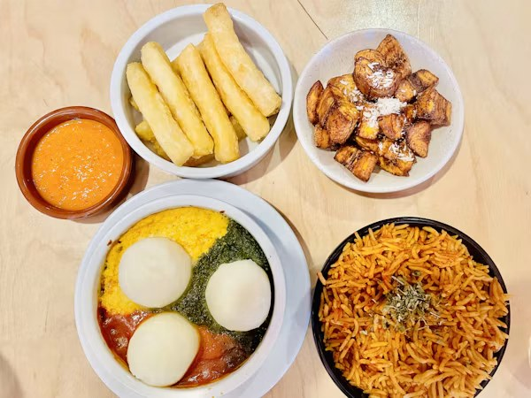

About us
Keeping Africa's kitchens alive.
Tastes of Africa collects recipes, ingredients and stories from across the continent to celebrate African food heritage and share it with the world.

Our mission
Every recipe is a piece of history. We record Africa's dishes, credit the cultures behind them and help more people cook them at home.
01
Record
Write down recipes the way they are cooked in homes and markets, so they are not lost.
02
Credit
Name the countries, communities and cooks that each dish comes from.
03
Cook
Give clear steps and scalable ingredient lists, so anyone can try them.
A brief history
Thousands of years at the table.
Ancient roots
Africa is one of the world's oldest food cradles. Sorghum and pearl millet were domesticated in the Sahel thousands of years ago, teff and coffee come from the Ethiopian highlands, and African rice was first farmed along the inner Niger Delta. In ancient Egypt, bakers and brewers were making leavened bread and beer more than 5,000 years ago.
Trade and exchange
Caravans crossing the Sahara carried salt, grain and spices, while Swahili ports traded with Arabia, Persia and India across the Indian Ocean. From the 1500s, the Columbian exchange brought maize, cassava, peanuts, tomatoes and chili peppers from the Americas. They became so central to African cooking that it is hard to imagine jollof or isombe without them.
Africa's global influence
Enslaved Africans carried seeds, skills and recipes to the Americas. Okra, black-eyed peas and sesame crossed the Atlantic with them, and West African rice-growing knowledge built the rice plantations of the Carolinas. The word “gumbo” is thought to come from a Bantu word for okra, and Brazilian acarajé is a close cousin of West African akara bean fritters.
African food today
African chefs, home cooks and food writers are bringing the continent's cuisines to a worldwide audience: peri-peri chicken, born from Mozambican and Portuguese cooking, is sold around the globe, teff fills health-food shelves, and jollof is on restaurant menus from London to Houston.
Food landmark
Kimironko Market, Kigali
Kimironko is one of the biggest and busiest markets in Kigali, Rwanda. Under its long roofs, traders sell fresh cassava leaves for isombe, green bananas, beans, tropical fruit, spices and brightly printed fabric.
It is the best place in the city to see where Rwandan home cooking begins.